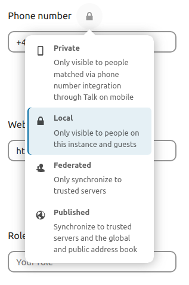
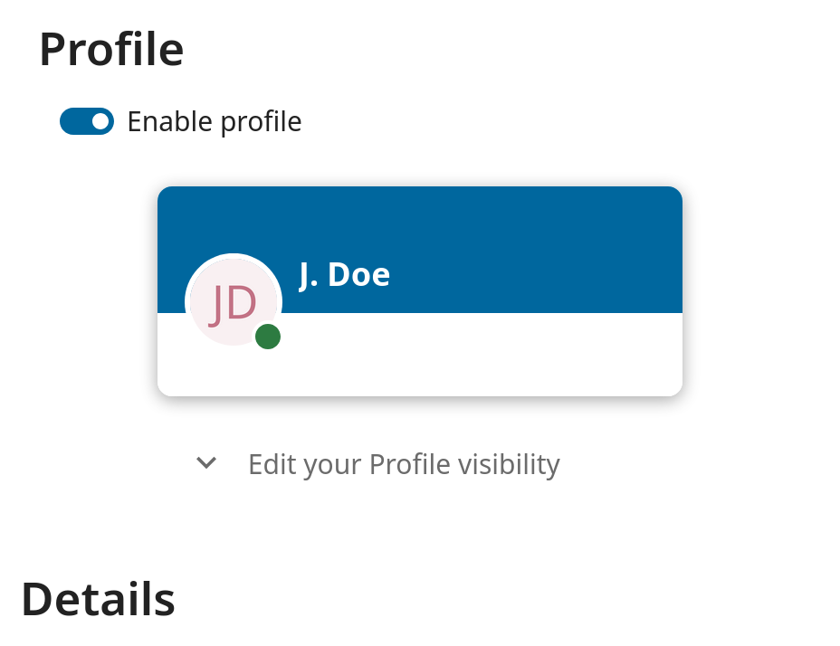

Hvilke muligheder og indstillinger du har, afhænger af administratorens opsætning. Hvis du ikke kan ændre adgangskoden eller det viste navn i dine personlige indstillinger, så kontakt din administrator for at få hjælp.
Nogle administratorer deler deres globale adressebog med andre Nextcloud-instanser (såkaldte Betroede servere) eller med hele verden. Det er nyttigt, når to instanser skal arbejde tæt sammen, eller når Nextcloud skal bruges som en virtuel telefonbog, som andre kan slå op i. Det gør det også muligt at søge efter kontakter, oprette delinger og meget mere.
Du kan ændre, hvilke personlige oplysninger der deles, ved at angive omfanget for dem. Klik på låseikonet for at åbne denne menu ved hvert felt:

Hvis du sætter dine data til Privat, er det kun dig, der kan se dem.
Hvis du sætter dine oplysninger til Lokal, kan alle brugere, der er logget ind på din Nextcloud-instans, se dem, men ingen uden for den.
Hvis du sætter dine oplysninger til Fødereret, kan de betroede servere, som din administrator har tilføjet, se dem, ud over alle brugere, der er logget ind.
Hvis du sætter dine oplysninger til Offentliggjort, kan alle se dem. Det er nyttigt i nogle tilfælde. En person med en udadvendt rolle, f.eks. i marketing eller salg, vil måske dele sine kontaktoplysninger med mange forbindelser, der måske ikke bruger Nextcloud.
Hvis din administrator har slået profilen til, kan dine profiloplysninger læses af andre brugere og gæster. Du styrer, hvem der kan se hvilke oplysninger, med de omfang, der er nævnt ovenfor:
Med Privat kan kun du og de brugere, du har tilføjet til din telefonbog, se dataene.
Med Lokal og derover kan gæster også se dine data.
Hvis du vil begrænse synligheden yderligere, så kan du forhindre gæster i at se dine profiloplysninger ved at sætte profilens synlighed til brugere, der er logget ind. Find knappen til profilens synlighed i dine personlige indstillinger:

Her kan du indstille synligheden for hver oplysning i profilen: